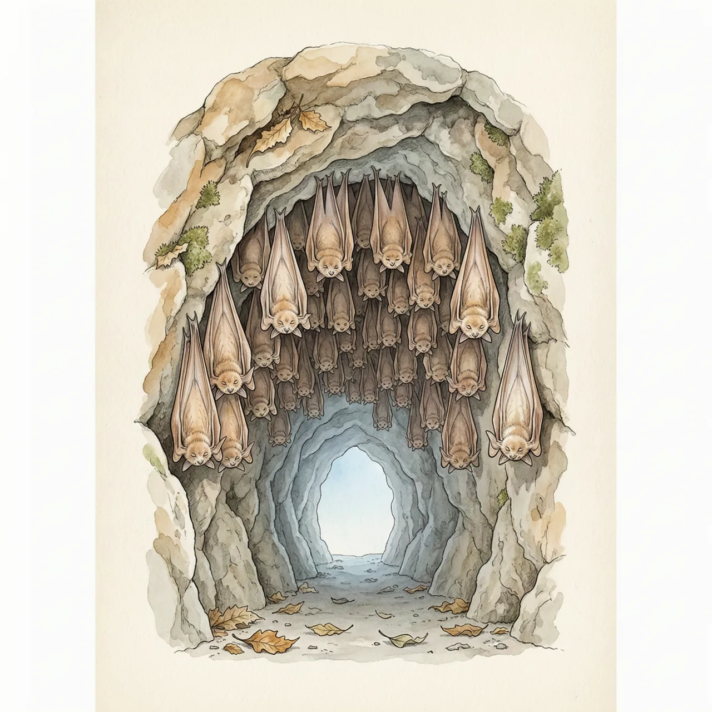
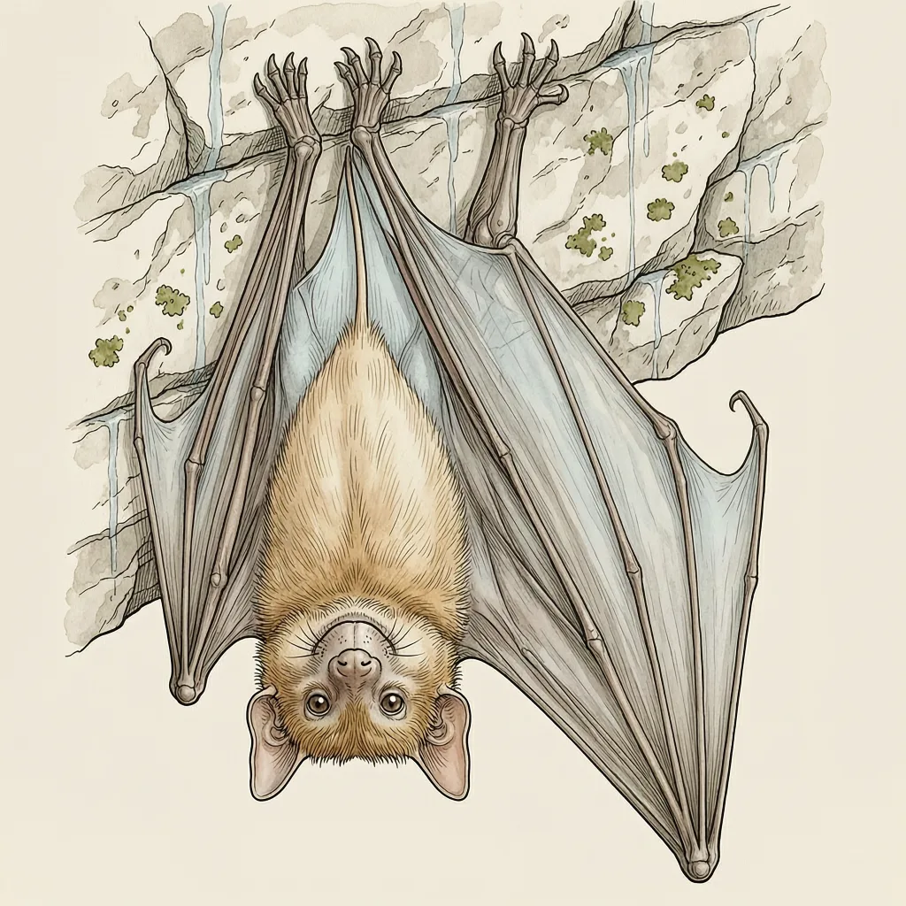

南蝠是蝙蝠科南蝠属的唯一成员。它见于中国江西、广西、贵州、云南等省，向南到越南和泰国北部，栖息在海拔400至1700米的石灰岩洞中，群体能从洞口一直深入洞内1500米。它的学名只有四个字母，是国际动物命名法规认可的最短名字。
从洞口往里走1500米，还能撞见南蝠的群体。南蝠的主要筑巢区是海拔400至1700米的石灰岩岩洞，巢从洞口开始往洞内铺展，最深可到1500米。它的分布以中国为主，江西、广西、陕西、贵州、安徽、云南、四川、江苏、湖北等省都有记录，境外见于印度、尼泊尔、老挝、越南和泰国北部，模式产地在湖北长阳。石灰岩被水溶蚀出大量洞窟，洞内温度起伏小，南蝠几乎把全部栖息地押在这种洞上。
把家安在洞的深处，是一桩没有备份的买卖。夏天南蝠既住树洞也住岩洞，入冬后退进洞深处蛰伏，靠捕食飞虫过日子。巢群能从洞口一路排进1500米深，说明它要的不是任意一道藏身的裂缝，而是特定的洞、特定的深度。这类洞数量有限，一旦被扰动，整群南蝠几乎没有第二条退路；长期以飞虫为食，也让它容易受到农药的影响。IUCN 给南蝠的等级是近危。
南蝠的学名 Ia io 一共四个字母，属名和种加词各占两个。它是国际动物命名法规认证的最短名字，另一个纪录保持者是恐龙奇翼龙（Yi qi）。命名人署 Thomas，时间标在1902年。第二重孤单在属一级：南蝠属 Ia 是单型属，全世界只有南蝠这一个物种，属里没有第二个种能拿来与它对照。
